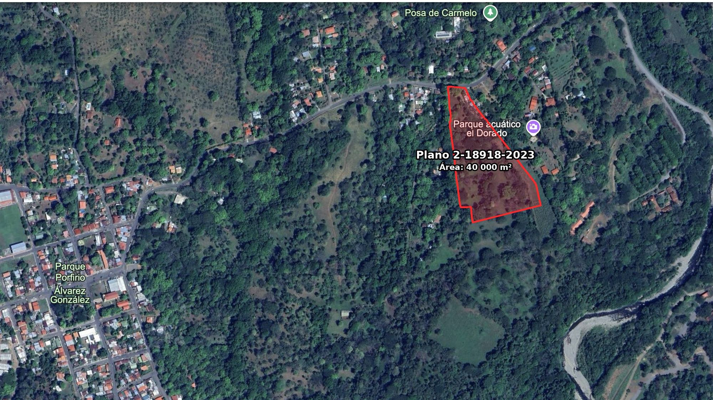
4 hectáreas sobre la Ruta Nacional 3
San Mateo de Alajuela. Proyecto listo para desarrollar, con uso de suelo residencial y documentación completa.
$4,480,000 USD$112 USD por m²
- Área total, 4 hectáreas
- 40,000 m²
- Precio por m²
- $112 USD
- Uso de suelo vigente
- Residencial
- Plano catastrado
- 2-18918-2023
Oportunidad estratégica
Ubicación de alta plusvalía con frente directo a la Vía Nacional 3. Esta propiedad de 40,000 m² es ideal para un desarrollo residencial boutique o un complejo de quintas, gracias a su conectividad inmediata y documentación completa.
Ideal para
Desarrollo residencial boutique o complejo de quintas: 4 hectáreas con frente a ruta nacional, uso de suelo residencial y documentación completa para iniciar obras.

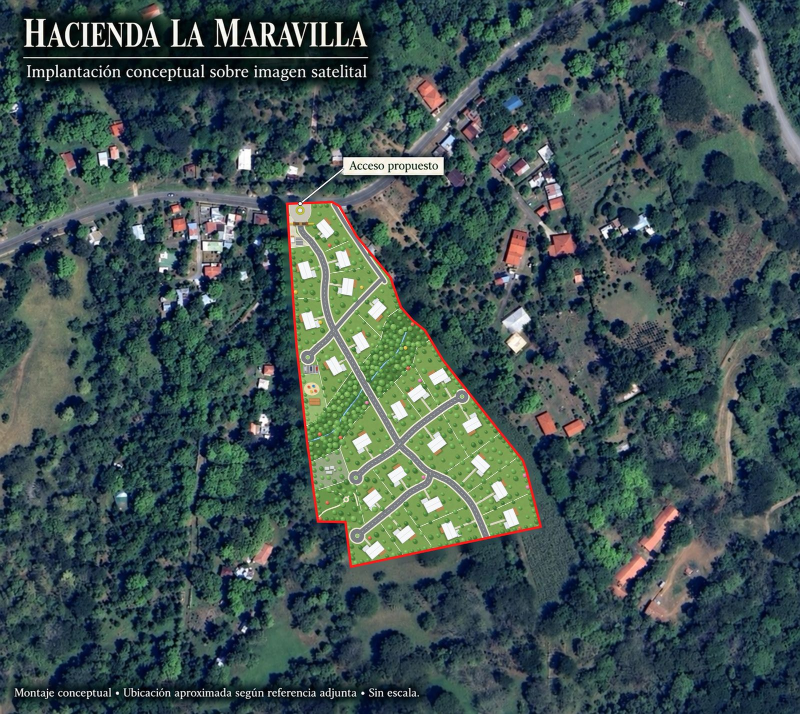
Estado del proyecto: Ready-to-Build
El terreno cuenta con toda la ingeniería y permisos necesarios para iniciar obras de inmediato:
Acceso premium
Frente directo a la Ruta Nacional 3 (Carretera al Aguacate).
Disponibilidad de agua
Carta oficial aprobada para proyectos residenciales.
Topografía
Modelado completo de curvas de nivel realizado.
Estudios técnicos
Estudios de permeabilidad y alineamientos al día.
Uso de suelo
Residencial vigente.
Avance del proyecto
90%Promedio de avance
Permisos en avance ante
- Municipalidad de San Mateo
- AyA
- MOPT
- INVU
Estudios
- Estudios de suelos
Presupuestos en avance
- Vialidad y peatonales
- Diseño de ingreso y seguridad
- Mecánico, eléctrico y pluvial
Pendientes
- Filiales
- SETENA
- Ambientalista
- Permisos CFIA
Hacienda La Maravilla, el concepto de desarrollo
Propuesta conceptual de condominio residencial para el terreno: 23 lotes residenciales, acceso controlado, vía interna, parque, juegos infantiles y estacionamiento de visitas.

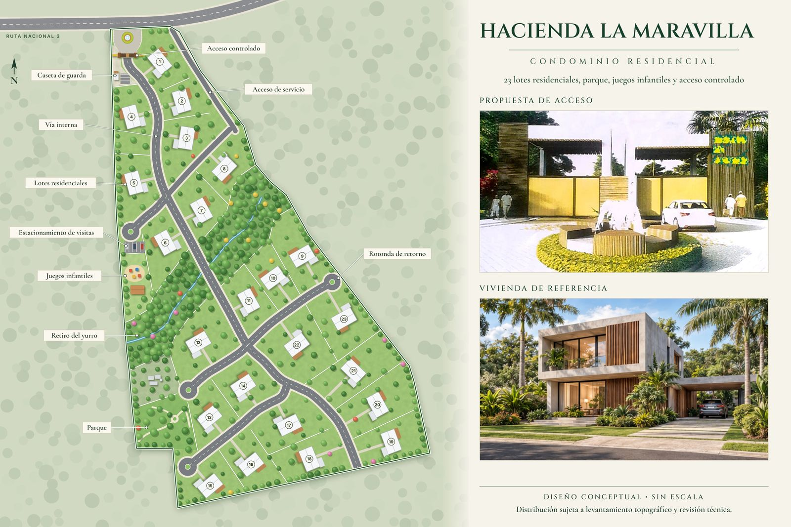
Interiores de referencia

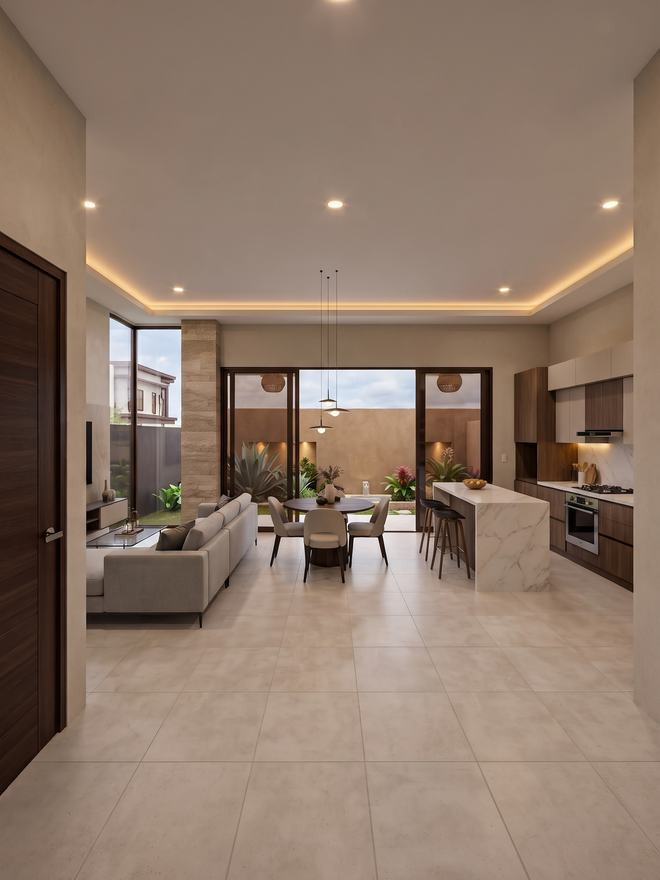

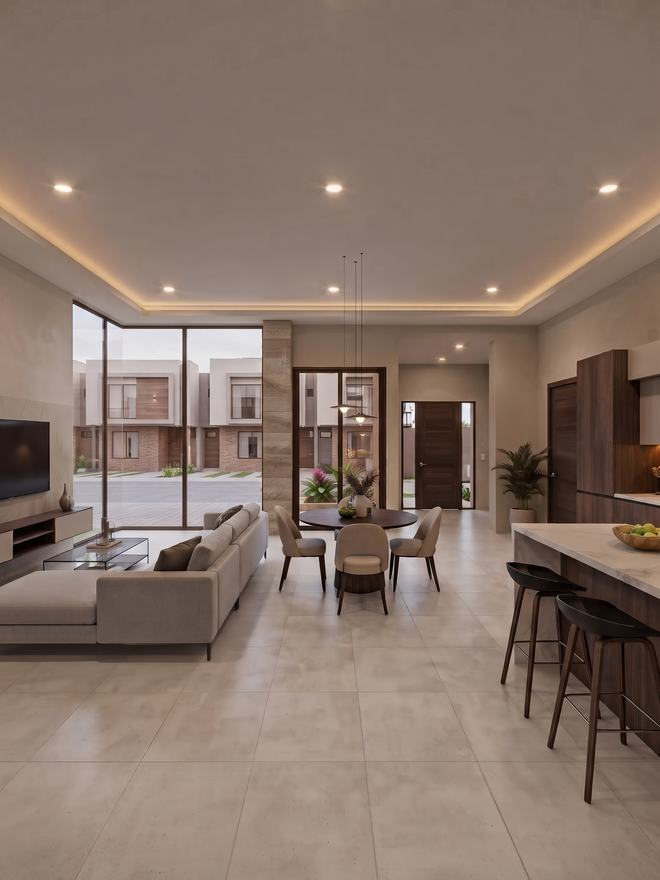

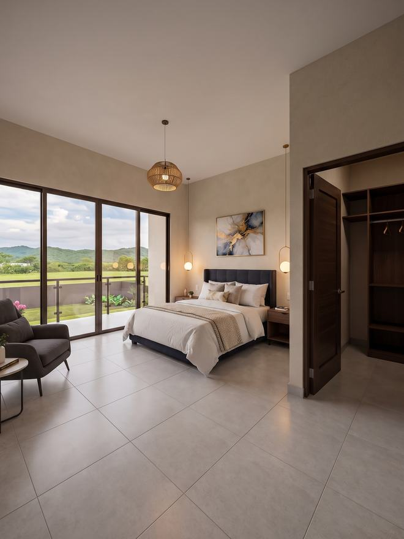

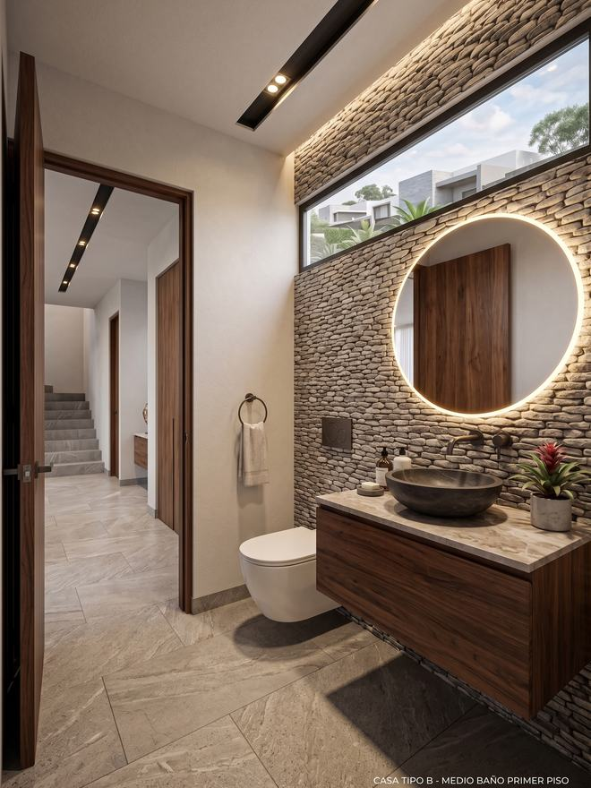
Ubicación y plusvalía: San Mateo
San Mateo ofrece el equilibrio perfecto entre la frescura de los Montes del Aguacate y la cercanía al Pacífico.
- Conectividad: A pocos minutos de Orotina y la Ruta 27.
- Entorno: Zona famosa por su clima saludable, producción de frutas tropicales y vistas panorámicas.
- Puntos de interés: Acceso rápido a las playas del Pacífico Central (40 min) y a los servicios comerciales de Orotina (10 min).
Tiempos de traslado
- Orotina y sus servicios comerciales
- 10 min
- Playas del Pacífico Central
- 40 min
- Ruta 27
- a pocos minutos

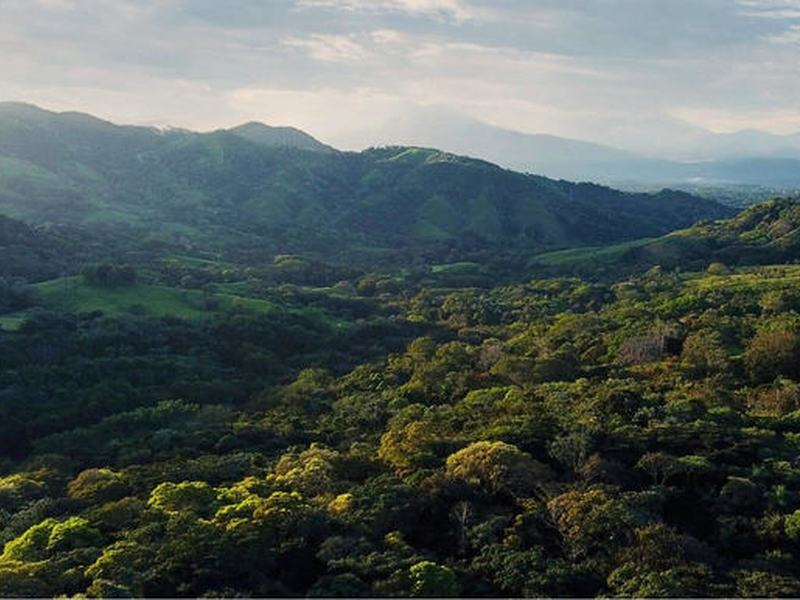

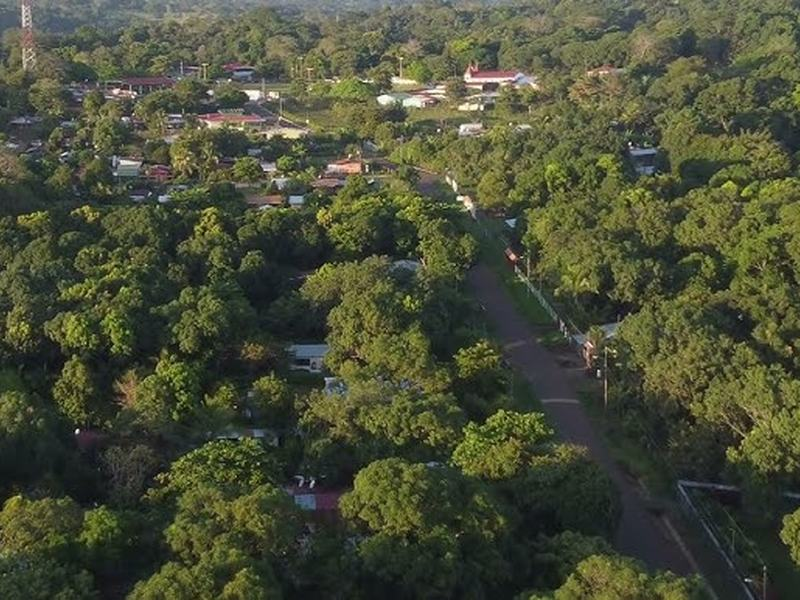

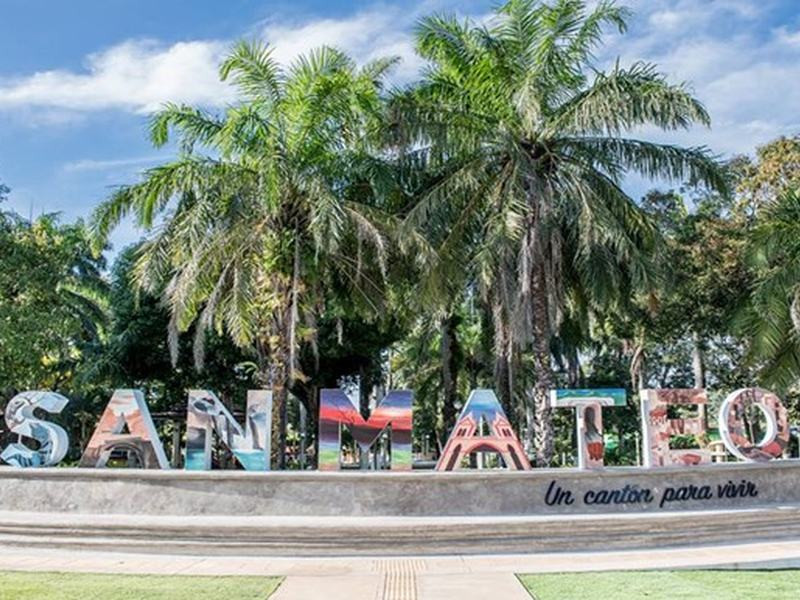

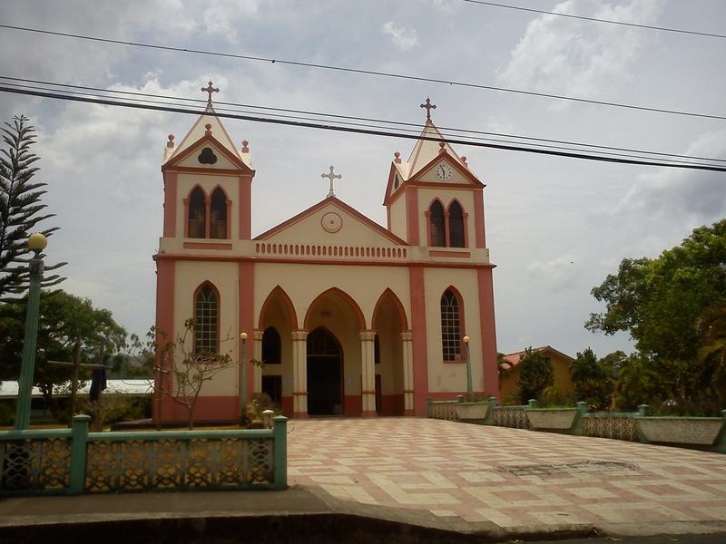
El terreno y su acceso

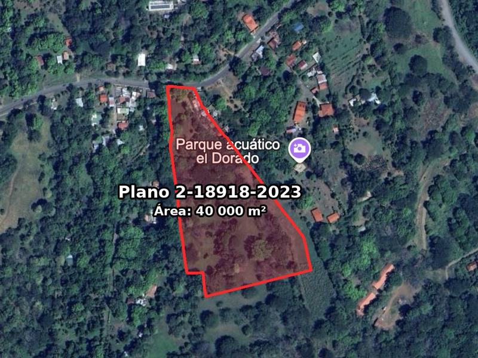

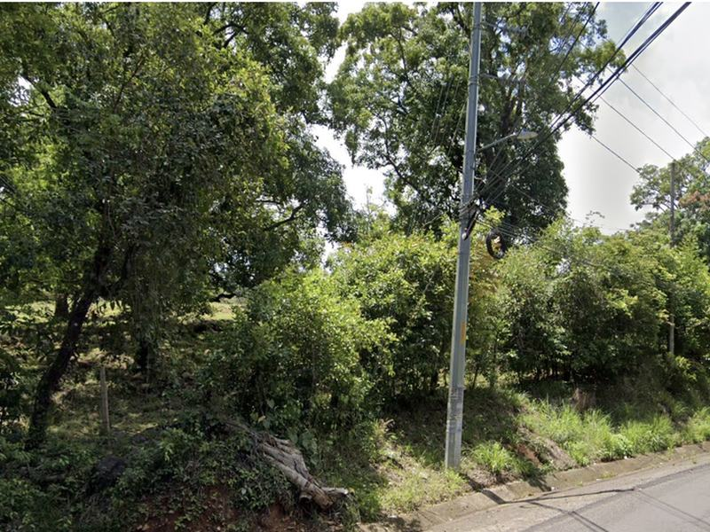

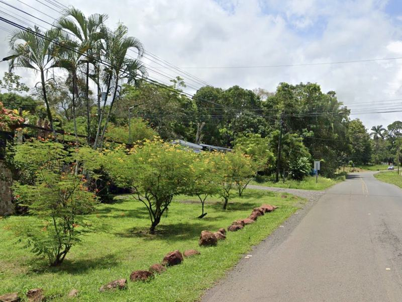

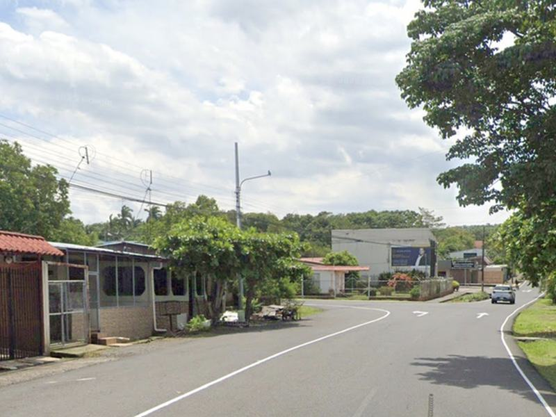

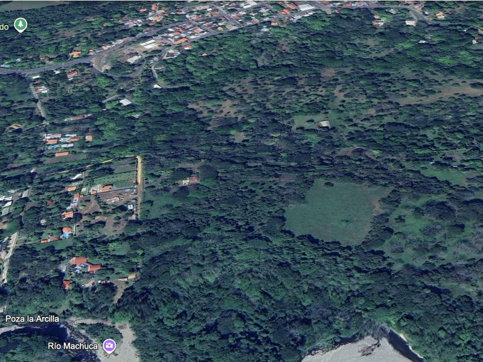

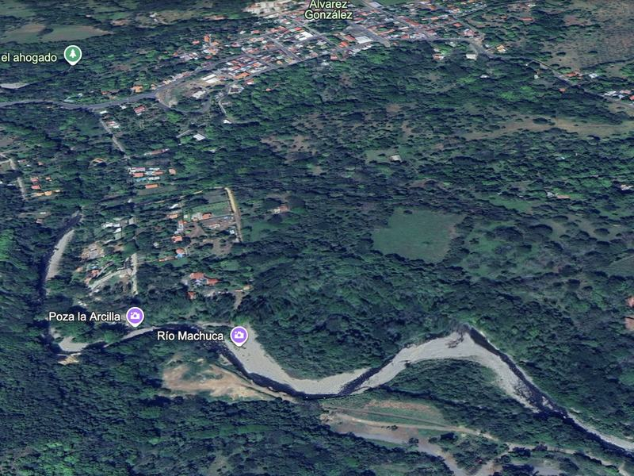
Detalle de la propiedad
| Tipo | Terreno para desarrollo |
|---|---|
| Modalidad | Venta |
| Ubicación | San Mateo, Alajuela |
| Acceso | Frente directo a Ruta Nacional 3 (Carretera al Aguacate) |
| Área total | 40,000 m² (4 hectáreas) |
| Plano catastrado | 2-18918-2023 |
| Uso de suelo | Residencial vigente |
| Precio por m² | $112 USD |
| Precio total | $4,480,000 USD |

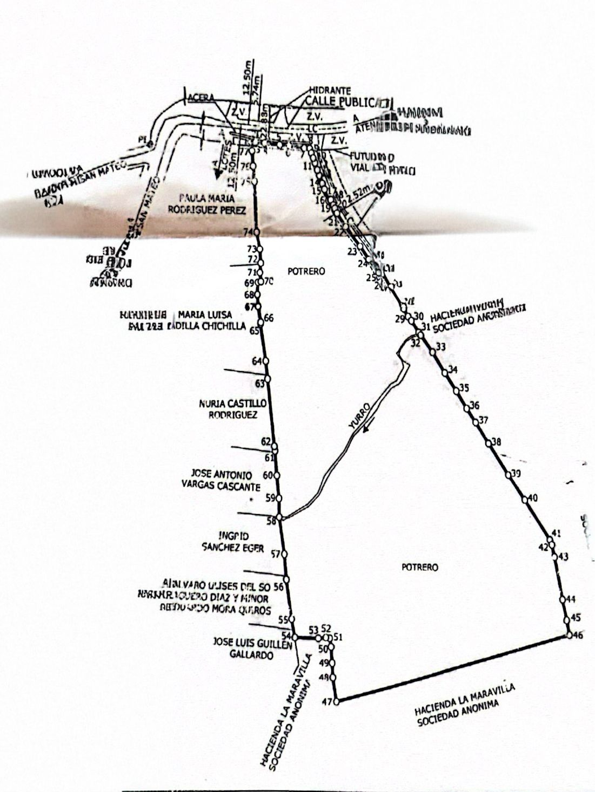
Agende una visita al terreno
Contáctenos para más información o para coordinar una visita.
- Sitio web
- www.inmobiliariajmk.com
- Catálogo
- linktr.ee/inmobiliariajmk
- Correo
- info@realestatejmk.com
- Somos Host de Airbnb
- Visítenos aquí